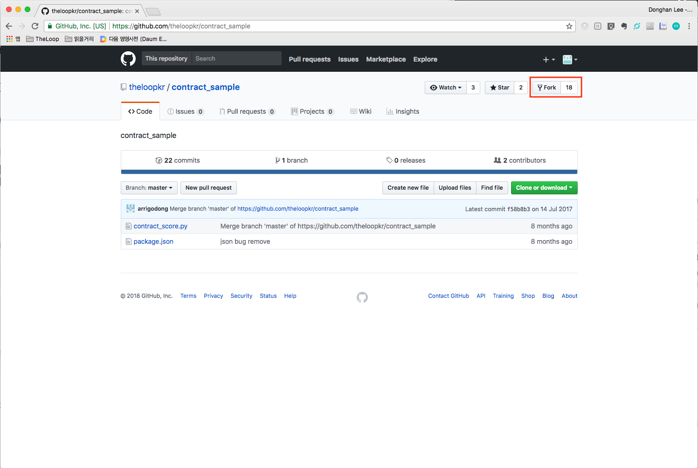
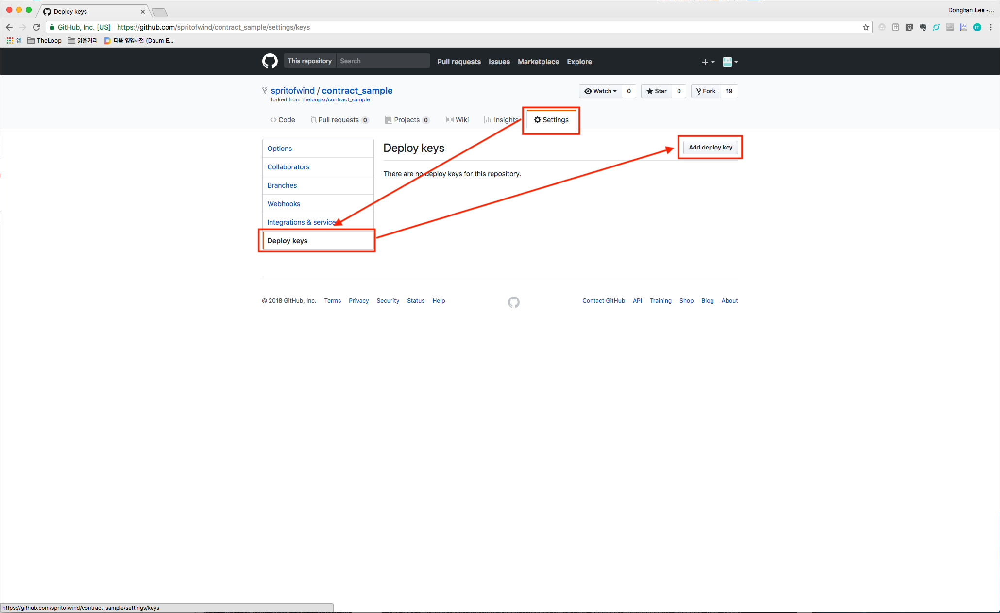

SCORE Tutorial¶
목적¶
이 Tutorial에서는 사용자의 컴퓨터에서 Docker로 loopchain을 실행하면서 Github에 있는 SCORE를 사용하는 것을 실습하여 봅니다.
SCORE 저장소 생성¶
1. GitHub에서 SCORE sample을 fork 해오기¶
GitHub에서 SCORE Sample 프로젝트(https://github.com/theloopkr/contract_sample) 를 자신의 계정으로 fork 하여서 SCORE 개발 환경을 위한 테스트용 SCORE 저장소를 생성합니다. 
- SCORE 프로젝트는 2개의 파일로 구성됩니다.
- package.json
- SCORE code (*.py 파일)
2. SCORE 저장소와 SSH통신을 위해 SSH키를 생성하기¶
ssh-keygen명령어를 사용하셔서 id_tutorial이라는 이름으로 생성합니다.
아래 화면을 참고하시고 GitHub의 자신의 이메일주소로 SSH키를 생성하셔야 합니다.
상세한 내용은 외부 링크를 참고해주세요. 만약 Sierra 10.12.2 혹은 그 이후의 MacOS를 사용하시는 분들은 링크의 내용을 참고하셔서 추가적으로 진행하셔야 하는 내용이 있으니 꼭 확인하시고 따라 하십시오.
$ ssh-keygen -t rsa -b 4096 -C "your_email@example.com"
Generating public/private rsa key pair.
Enter file in which to save the key (/Users/{user_id}/.ssh/id_rsa): /Users/{user_id}/.ssh/id_tutorial
......
$ ls -la ~/.ssh/ | grep id_tutorial
-rw------- 1 donghanlee staff 1679 3 7 09:45 id_tutorial
-rw-r--r-- 1 donghanlee staff 420 3 7 09:45 id_tutorial.pub
3. GitHub에 Deployment key를 등록하기¶
앞서 Fork를 뜬 SCORE 저장소에 SSH public key 내용을 (예:id_tutorial.pub)를 등록합니다.
- Public key의 내용을 확인합니다.
$ cat .ssh/id_tutorial.pub
ssh-rsa
......YOUR_PUBLIC_KEY........
== your_email@example.com
- Public key의 내용을 아래처럼 Fork한 SCORE package의 deployment key로 등록합니다. 
환경설정¶
Local computer에서 RadioStation과 1개의 Peer로 Blockchain network 구성하기 내용을 기반으로 SCORE 환경설정을 하겠습니다. 해당 파일과 디렉토리를 복사하여서 다른 디렉토리로 만들고 아래 내용대로 추가 하거나 수정합니다.
1. RadioStation 설정 - SCORE 저장소 경로 설정¶
channel_manage_data.json을 열어서 score_package의 값으로 "{your_github_id}/contract_sample"라고 수정합니다.
channel_manage_data.json
{
"channel1":
{
"score_package": "{your_github_id}/contract_sample"
}
}
2. 시작 스크립트인 start.sh 스크립트의 peer 부분을 수정¶
- 환경변수 추가 등록
export SSH_KEY_FOLDER=/Users/{user_id}/.ssh/id_tutorial - SSH key 경로설정
-v ${SSH_KEY_FOLDER}:/root/.ssh/id_rsa - SCORE 저장소 도메인 설정
-e "DEFAULT_SCORE_HOST=github.com"
변경된 start.sh파일 내용
```
##############################################
# 환경변수등록
##############################################
export SSH_KEY_FOLDER=/Users/{user_id}/.ssh/id_tutorial
##############################################
# Peer0 실행
##############################################
docker run -d --name peer0 \
.....
-v ${SSH_KEY_FOLDER}:/root/.ssh/id_rsa \
-e "DEFAULT_SCORE_HOST=github.com" \
.....
```
환경 설정 확인¶
1.loopchain 도커 컨테이너를 모두 실행: start.sh
$ ./start.sh
2.peer 목록 조회
$ curl http://localhost:9002/api/v1/peer/list | python -m json.tool
{
"data": {
"connected_peer_count": 2,
"connected_peer_list": [
{
.......
},
{
.......
}
],
"registered_peer_count": 2,
"registered_peer_list": [
{
.......
},
{
.......
}
]
},
"response_code": 0
}
- 현재 Blockchain network에 연결된 Peer들을 보여줍니다.
connected_peer_count와registered_peer_count의 값이 같아야 합니다.
3.Peer 상태 조회
$ curl http://localhost:9000/api/v1/status/peer | python -m json.tool
{
"audience_count": "0",
"block_height": 0,
"consensus": "siever",
"leader_complaint": 1,
"made_block_count": 0,
"peer_id": "d0060308-22b2-11e8-b58b-0242ac110004",
"peer_target": "172.17.0.4:7100",
"peer_type": "1",
"status": "Service is online: 1",
"total_tx": 0
}
Peer의 block들의 높이, 상태, Tx의 갯수등을 보여줍니다.
4.SCORE 버전 조회
$ curl http://localhost:9000/api/v1/status/score | python -m json.tool
{
"all_version": [
"f58b8b3e955984a09674a1f74c493001678d706c",
"b39064b358b84798f20f024fca066a113ec88b18",
"99923ce139350cf8f37ef9f72fddf3f327da4d7a",
"e25e2fba404bbc42b010c552d280063c704a0917",
"909b1ee00a00f12f744f3d669232c6f4549e945f",
"51f258059bcc4f1fa46ba3df8762b953e27fcdee",
"359b1f79b8bf2064ce0605d4b081da43a845beda",
"3d7195e1e98e38bdddab93fd03ee0c7aa0a20765",
"669b6db3a6c085b3de96d7bd13bc19efc26162ae",
"5136f28e83e3aaf6fabb0c0556b505ca5b95a44c",
"a74476425197c2b2b009a180f24f52efec932da8",
"95c0dd33b826c9b529a9f8b6b349e1b002bb9835",
"71afe3ca44fa46acced9b12c80ad1951fe83e4bd",
"f01986ae06e402a97e48bfddb31d5aeebe1dc07b",
"99ece33bb62b8b1c61182d074351b5062311d2f5",
"eabe94b94545faac1c8951fb31ef62a9f549cc5f",
"f5aab582d9f390f5378daf08f54d08c071f15d0c",
"f79c480fc7af6d02c79e1fe3191bbc471962166f",
"e38140e76766f2e51f30858a0ee3c82a90b9c258",
"af7c49743fecd315d4e4491751fbdae9b92dead7",
"bcc0d0f05d1a219cd4ed47955a86b0e16d1b2778"
],
"id": "{your_github_id}/contract_sample",
"status": 0,
"version": "f58b8b3e955984a09674a1f74c493001678d706c"
}
현재 올라온 SCORE의 버전들을 보여줍니다. SCORE는 내부에서 Git으로 버전을 관리하기 때문에 Git상에서 각 버전의 SHA-1 hash를 보여줍니다.
5.SCORE Transaction 생성
$ curl -H "Content-Type: application/json" -X POST -d '{"jsonrpc":"2.0","method":"propose","params":{"proposer":"RealEstateAgent" , "counterparties": ["leaseholder","jinho"], "content": "Theloop APT 101-3001, lease for 3 months from 3th April,2018", "quorum": "3"}}' http://localhost:9000/api/v1/transactions | python -m json.tool
{
"more_info": "",
"response_code": "0",
"tx_hash": "7bc856e972da62a6cba3deff71e74e848174fc1e28feaae66f58ff2447875f0a"
}
새로운 Transaction을 만들기 위해서, 해당 SCORE의 invoke()아래 구현된 함수를 부릅니다. 이를 위해, 해당 함수를 부를 수 있는 json-rpc 2.0 형태의 JSON을 만들어 부릅니다. 여기서는 propose라는 함수를 불러본 것입니다. 이 결과로 Tx의 Hash값을 되돌려줍니다.
6.SCORE Transaction 조회 - tx_hash 사용 (7bc856e972da62a6cba3deff71e74e848174fc1e28feaae66f58ff2447875f0a)
$ curl http://localhost:9000/api/v1/transactions/result?hash=7bc856e972da62a6cba3deff71e74e848174fc1e28feaae66f58ff2447875f0a | python -m json.tool
{
"response": {
"code": 0,
"jsonrpc": "2.0"
},
"response_code": "0"
}
앞서 만든 Tx의 hash를 가지고 결과를 조회해봅니다. response_code가 0면 정상입니다.
7.SCORE Transaction 실행 결과 조회 (Query)
$ curl -H "Content-Type: application/json" -X POST -d '{"jsonrpc": "2.0","channel":"channel1","method":"get_user_contracts","id":"11233","params":{"user_id":"jinho"}}' http://localhost:9000/api/v1/query | python -m json.tool
{
"response": {
"code": 0,
"id": "11233",
"jsonrpc": "2.0",
"response": {
"user_contracts": [
{
"approvers": [
"RealEstateAgent"
],
"content": "Theloop APT 101-3001, lease for 3 months from 3th April,2018",
"contract_id": 1,
"counterparties": [
"leaseholder",
"jinho"
],
"proposer": "RealEstateAgent",
"quorum": "3"
}
]
}
},
"response_code": "0"]
}
만들어진 Transaction을 찾기 위해서, 해당 SCORE의 query()아래 구현된 함수를 부릅니다. 이를 위해, 해당 함수를 부를 수 있는 json-rpc 2.0 형태의 JSON을 만들어 부릅니다. 여기서는 user_contracts 라는 함수를 불러본 것입니다.
8.peer 상태 조회(block_height, made_block_count,total_tx 변화 확인)
$ curl http://localhost:9000/api/v1/status/peer | python -m json.tool
{
"audience_count": "0",
"block_height": 1,
"consensus": "siever",
"leader_complaint": 1,
"made_block_count": 1,
"peer_id": "d0060308-22b2-11e8-b58b-0242ac110004",
"peer_target": "172.17.0.4:7100",
"peer_type": "1",
"status": "Service is online: 1",
"total_tx": 1
}
앞에서 만든 Tx로 total_tx가 증가된 것을 확인할 수 있습니다.